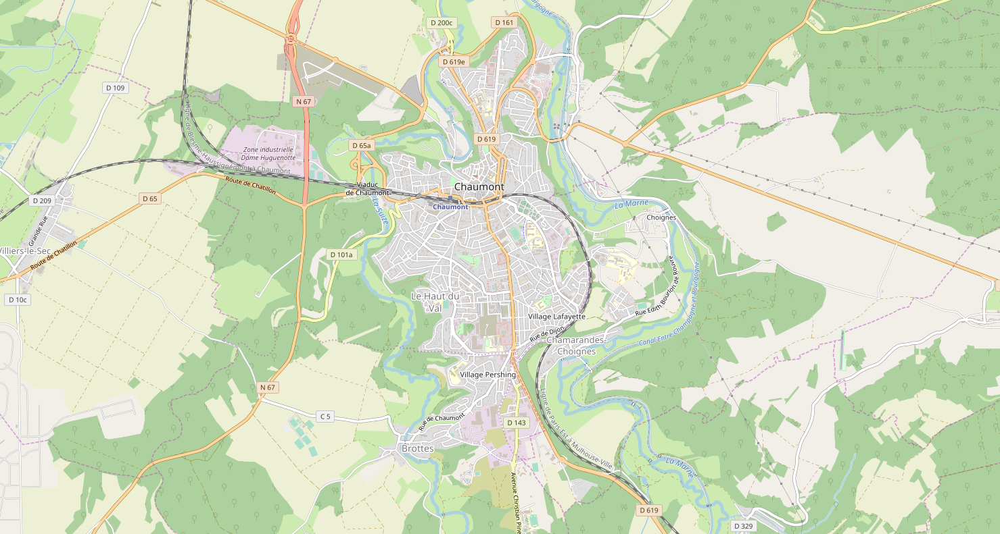

OpenStreetMap (OSM - https://www.openstreetmap.org) est un projet de cartographie libre du monde (permettant par exemple de créer des cartes sous licence libre), en utilisant le système GPS et d'autres données libres. Il a la particularité d’être collaboratif, c’est à dire que chaque utilisateur peut participer à titre individuel à OpenStreetMap, pour décrire des lieux qu’il connaît bien.
Il a été mis en route en juillet 2004 par Steve Coast au University College de Londres et compte aujourd’hui plus de 4 500 000 contributeurs.
En France, il est de plus en plus utilisé par les collectivités (communes, départements) pour collecter de façon participative des données sur leur territoire.

Nous allons utiliser les cartes proposées par Open Street Map et le langage Python afin de générer des cartes personnalisées. Plus exactement, nous allons utiliser une bibliothèque Python nommée Folium. Une bibliothèque Python permet de rajouter des fonctionnalités au langage de base. Folium va donc nous permettre de créer nos propres cartes à partir des cartes proposées par Open Street Map
Remarque importante : la librairie « Folium » doit être installée au préalable. Pour cela, consulter cette page
import folium
maCarte= folium.Map(location=[47.255982,-1.524715])
maCarte.save('Carte.html')
Rappel : la longitude et la latitude d'une ville peuvent être trouvées aussi avec géoportail.
Remarque : il est possible d'obtenir un niveau de zoom en ajoutant un paramètre « zoom_start" dans votre programme. Par exemple :
import folium
maCarte= folium.Map(location=[47.255982,-1.524715],zoom_start=15)
maCarte.save('Carte.html')
import folium
maCarte= folium.Map(location=[47.95861 , 0.219394],zoom_start=20)
folium.Marker([47.959185 , 0.22317]).add_to(maCarte)
maCarte.save('ihavethecard.html')
Remarque : Il est possible d'associer une information à un marqueur en ajoutant le paramètre "popup" comme par exemple :
folium.Marker([47.959185 , 0.22317],popup="stade MMArena").add_to(c)
Il suffira de cliquer sur le marqueur pour que l'information définie par le paramètre "popup" apparaisse à l'écran.